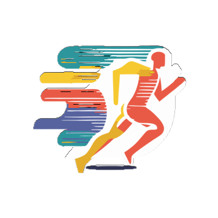

<ion-content class="onboarding" fullscreen="true" scrollY="false"
style="
--background: radial-gradient(
        circle at 10% 20%,
        rgb(0, 0, 139) 0%,   /* Biru Tua Sangat Gelap */
        rgb(0, 0, 205) 50%,  /* Biru Tua */
        rgb(65, 105, 225) 100%  /* Biru Medium */
      );
z-index: 10;
background-color: transparent; /* Memastikan latar belakang tidak hitam */
"
>

  <div class="slide-inner-wrapper ion-padding-vertical">

    <ion-grid class="slide-header">
      <ion-row>
        <ion-col size="6">
        </ion-col>
        <ion-col size="6" class="ion-text-end">
          <ion-button [routerLink]="['/tabs/home']"  size="small" color="dark" fill="clear" ><p style="color: #fff;">SKIP</p></ion-button>
        </ion-col>
      </ion-row>
    </ion-grid>


    <div class="slide-body ion-text-center">
      
      <div class="text-wrapper ion-text-start ion-text-sm-center">
        <h1 style="color: white;">Become the great with SPORTFLUX</h1>
        <ion-text><h3 style="color: white;">Pelajari Selengkapnya Bersama SPORTFLUX</h3></ion-text>
      </div>
      
    </div>
    
    <div class="slide-footer ion-text-end">
      <ion-button color='light' [routerLink]="['/tabs/home']"  class="ion-text-uppercase"
       mode="md" size="large" shape="round" strong="true">Start</ion-button>
    </div>

  </div>

</ion-content>
